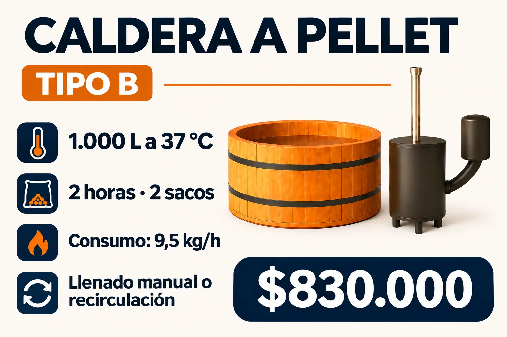

01 / CALDERA A PELLET
Tipo A
Según su ficha: 1.000 litros a 37 °C en 1 hora, con 1 saco de pellet.
$1.150.000Consultar por el modelo A ↗Calefacción para tinajas y piscinas que acompaña esos momentos que quieres prolongar.
Descubre nuestras calderas ↓Conoce las alternativas RPV y consulta las condiciones para tu instalación y el uso que tienes en mente.
Según su ficha: 1.000 litros a 37 °C en 1 hora, con 1 saco de pellet.
$1.150.000Consultar por el modelo A ↗
Según su ficha: 1.000 litros a 37 °C en 2 horas, con 2 sacos de pellet.
$830.000Consultar por el modelo B ↗
Según su ficha: 1.000 litros a 37 °C en 2,5 horas, con 2,5 sacos de pellet.
$730.000Consultar por el modelo C ↗Valores y rendimiento según las fichas proporcionadas. Consulta vigencia, condiciones de operación y qué incluye cada modelo. Imágenes referenciales.

Consulta la guía completa para conocer la conexión, el encendido y el mantenimiento.
Abrir guía completa ↗
Existe una solicitud de patente presentada ante INAPI para esta caldera a pellet.
Estamos disponibles para conversar sobre tu proyecto.
Contactar a RPV ↗